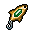

Lure with a gem
| Lure with a gem | |
|---|---|
 | |
General Information
| |
Type :
|
Fishing; Equipment |
Stack size:
|
1 |
Base Cost :
|
|
Source(s)
| |
| Lighthouse Keeper | |
Study Information
| |
Study reward:
|
N/A |
Technical Information
| |
Internal name:
|
bait_gem |

Lure with a gem (or gem lure) is a piece of equipment, one of two available lures, the other being the steel lure, that functions as a potential bait while fishing. They will degrade by 10% with each use, even during a failed attempt, making success particularly important given their expense. The lures, along with all three fishing rods, are available exclusively from the Lighthouse Keeper, this one being sold at Tier III for  5 . It cannot be acquired through any other means, such as crafting, nor can it be studied or sold.
5 . It cannot be acquired through any other means, such as crafting, nor can it be studied or sold.
Bait
Lure with a gem is one of eight(8) available baits to choose from when fishing.
- There are eight(8/16) susceptible fish; the Tuna, Sardine, Pike, Silver crucian, Carp, Sturgeon, Salmon, and Goldfish.
- The gem lure and steel lure are often - but not always - identical in this regard.
- • Both lures are unique, in that no low-tier fish are susceptible.
- • Either lure is required in order to catch the Silver crucian.
- • The Pike and Salmon prefer the gem lure, over steel.
- The gem lure is required in order to catch the Goldfish.
- The Goldfish is generally considered the best commodity, given a gem lure.
- • Goldfish has a very low chance, satisfying any demand for Tuna, with fair compensation.
- • Silver Crucian and Salmon are alternates, but the steel lure is ideal, at half the cost.
| |||||||||||